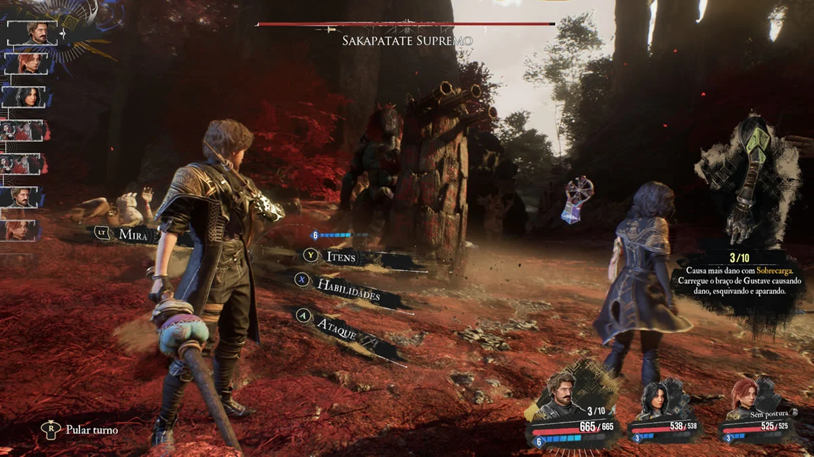
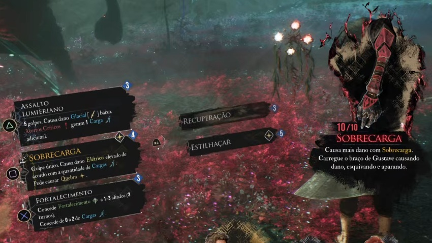

Gustave

Atributos Iniciais
- Saúde 150
- Poder de Ataque 49
- Velocidade 212
- Defesa 0
- Taxa Crítica 8%
Gustave empunha uma arma e uma espada e é o primeiro personagem jogável neste jogo. A pistola é uma boa arma para mirar e atirar nos pontos fracos de um inimigo quando em combate. Tome nota que o tiro custa 1 AP.


Dito isto, seus ataques podem ser básicos, mas poderosos, com as atualizações certas. Ele começa com 2 habilidades Assalto Lumièriano e Sobrecarga. Lumièriano causa baixo dano físico com 5 golpes, mas o golpe crítico gerará uma carga adicional por sua Sobrecarga.
